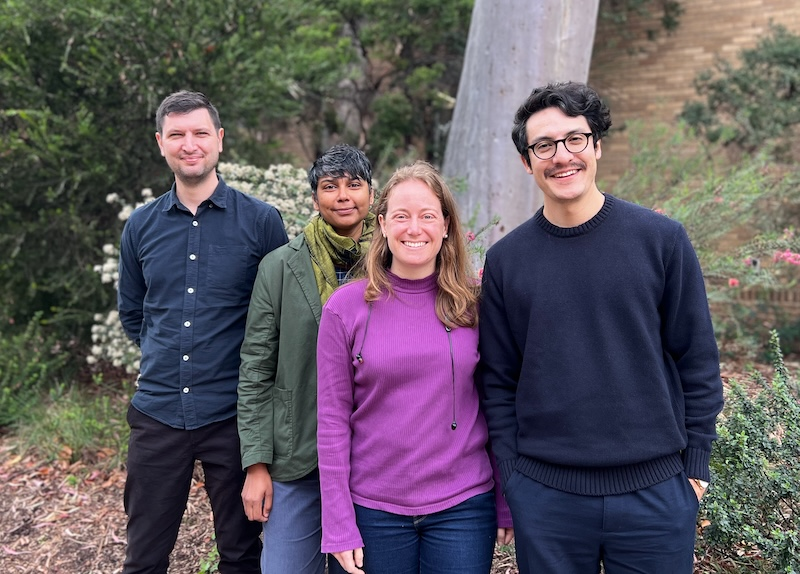

Churchill Fellowship FAQ
An introduction for myself and other visitors
Hello there! Welcome. I’m Martin and this is my first post.
I’ll be using this blog for a few things, but at first, it’ll be a place where I record information related to my Churchill Fellowship. I’ve structured this first post as an FAQ.
Who are you?
I run the Science and Decision Support Team at the Atlas of Living Australia, which is hosted by the national science agency (CSIRO). The ALA is the Australian node of the Global Biodiversity Information Facility (GBIF). My team and I are mostly known for our work in open source software, which you can explore at ALA labs.
Prior to joining the ALA, I was a researcher in landscape ecology and conservation biology, as part of Professor David Lindenmayer’s lab at the Australian National University.

What is a Churchill Fellowship?
The Churchill Trust is a not-for-profit charitable trust that allocates approximately 100 fellowships each year. It is paid for from the returns of the largest door-knocking campaign in Australian history, which was held to raise funds in memory of Winston Churchill.
In terms of what a Churchill Fellow does, their website states:
A Churchill Fellowship offers Australian citizens and permanent residents a life-changing opportunity to travel overseas.
You don’t need an academic qualification to apply, in fact you don’t need to have completed school. You can do a Churchill Fellowship on any topic, provided there is a benefit to Australia and your community by you sharing your knowledge or skills.
A Churchill Fellow travels for a short period of time (up to 8 weeks) to learn from International experts in their chosen field, with the goal of returning that information to Australia for the national benefit.
What problem are you trying to solve?
The ALA aggregates millions of ‘occurrences’, which are observations of plants or animals taken at a particular place and time. These occurrences are provided by hundreds of different institutions, representing thousands of individual observers. Our job is to store and share these observations with the public.
Every year, we run a survey to ask our users how satisfied they are with the ALA. The biggest problem raised by those users is that our data ‘quality’ is inadequate for their needs. While most records from most providers are accurate, there is always a certain proportion of biodiversity observations that are wrong in some way. Unfortunately, as the number of observations increases, even a small error rate translates to many, many incorrect records.
My project is “To investigate global-scale solutions in biodiversity informatics”, which basically means to find ways to flag potentially erroneous occurrence records.
Aren’t there already tools to detect problematic occurrences?
Yes. Currently, the data quality system at ALA and GBIF involves flagging records with known problems, and allowing the user to make up their own mind as to which problems are in conflict with their needs. This approach has several advantages:
- It is reproducible: rulesets are easy to define, and behave the same way each time.
- It empowers users: individuals can make their own choices about what ‘quality’ means to them.
- It scales well: codebases are easy to build, test and maintain.
This method also has drawbacks, however. It requires users to understand quite deeply what those checks are and how they work before making a decision. That requires a lot of documentation, which is cumbersome both for maintainers and users. The main problem, though, is that this approach is entirely deterministic; there is no estimate of likelihood or uncertainty.
Why have you chosen to explore statistical modelling?
When we talk about data ‘quality’, we are implicitly making a statement about how trustworthy we think a piece of data is. Such decisions are not binary, but subtle and gradated. Statistical modelling treats this as a probabalistic problem, which is a natural fit for our intuitive perception of what quality means. Statistical approaches to data quality have practical benefits as well:
- The underlying principles of building models on large datasets are well understood, and once parameterised, can be repeated with limited oversight.
- Models can be added to existing data-processsing workflows without large additions, unlike user-driven approaches which require substantial re-design and re-engineering of existing platforms.
- Recent improvements in Artificial Intelligence (AI) and Machine Learning (ML) have brought new methods that can be applied to traditional problems, but are not yet being used for this problem (to my knowledge).
Just because statistical models have these properties, though, does not mean that any such project is inherently worthwhile, or that we should start work without any consideration of the strengths and weaknesses of our approach. Hence this fellowship.
What will you do during your Fellowship?
My primary interest is in discussing these ideas with as diverse a group of potential collaborators as possible. Rather than recreate existing research or tooling, it would be ideal to learn and collaborate on what an optimal solution might look like. Further, once a potential solution or set of solutions is identified, it would be inefficient to pursue those alone rather than with the support of that community. I will meet with interested parties at my host institutions, as well as in universities, museums and government in those host cities. I will be visiting the following institutions:
- GBIF Norway, Oslo, Norway
- Swedish Biodiversity Data Infrastructure, Stockholm, Sweden
- Global Biodiversity Information Facility, Copenhagen, Denmark
- Plantentuin Meise, Flanders, Belgium
- National Biodiversity Network, London, UK
What are your questions?
I will be visiting groups with very different backgrounds, skillsets and insights, so I’m reluctant to be too restrictive. The nature of the discussion will almost certainly vary from place to place, and as I learn more about the topic. In broad terms, though, the following questions are interesting to me:
- How much of a problem is data quality?
- Is it affecting you, your users or stakeholders, and to what extent? Are current methods nearly or completely adequate? Perhaps existing methods are ‘good enough’, in that they don’t greatly affect decisions made from the underlying data, or are there areas of systemic bias?
- What is the status of recent work on this topic?
- What activities, bodies of work, or intellectual or computational tools already exist that might help us? How much effort has already been spent on this problem, and would further activities be beneficial or redundant?
- What should a statistical method do to provide value?
- i.e. should it identify all kinds of errors, or just those that are currently difficult to spot? Should it focus on rare or common or threatened taxa? Should it account for misidentified observations? What methods have you found promising in the past?
- How might we integrate insights from different disciplines and approaches?
- A range of different classes of models have potential relevance, from species distribution models, to phylogenetic models, to machine learning models. What are their respective strengths and weaknesses? Can we integrate different types of learnings in a single model?
- What is the opportunity cost of alternate solutions?
- How should this information be made accessible to users? Would it be more beneficial to work with data providers to clean data rather than productionize new models? Or are there cumulative benefits from doing both?
- Who else should I speak to?
- What skills and interests are there in your region or networks that could be brought to bear on solving these problems?
What outcomes are you hoping for?
First, I’d like to expand and contribute to the network of researchers and professionals already working to improve access to biodiversity information around the world. This network - consisting of both formal and informal collaborations - is already doing great things, and I’m keen to play my part.
Second, I’m hoping we can workshop the opportunities and challenges of this approach, and work to indentify common problems and solutions.
Third, I would like to capture the results of these consultations to ensure benefits are maximised. I’m interested in capturing the results in a scientific paper of some kind, in addition to the report I will produce for the Churchill Trust.
Finally, I’d like to identify people who are interested to continue the journey after the fellowship is complete. Building and optimizing tools of this kind is careful work, and benefits will take time to realise.
You’re not visiting my institution / city / country - can I still contribute?
Yes! This Fellowship is useful, but it’s not the whole story. Please reach out to me any time if this topic interests you.